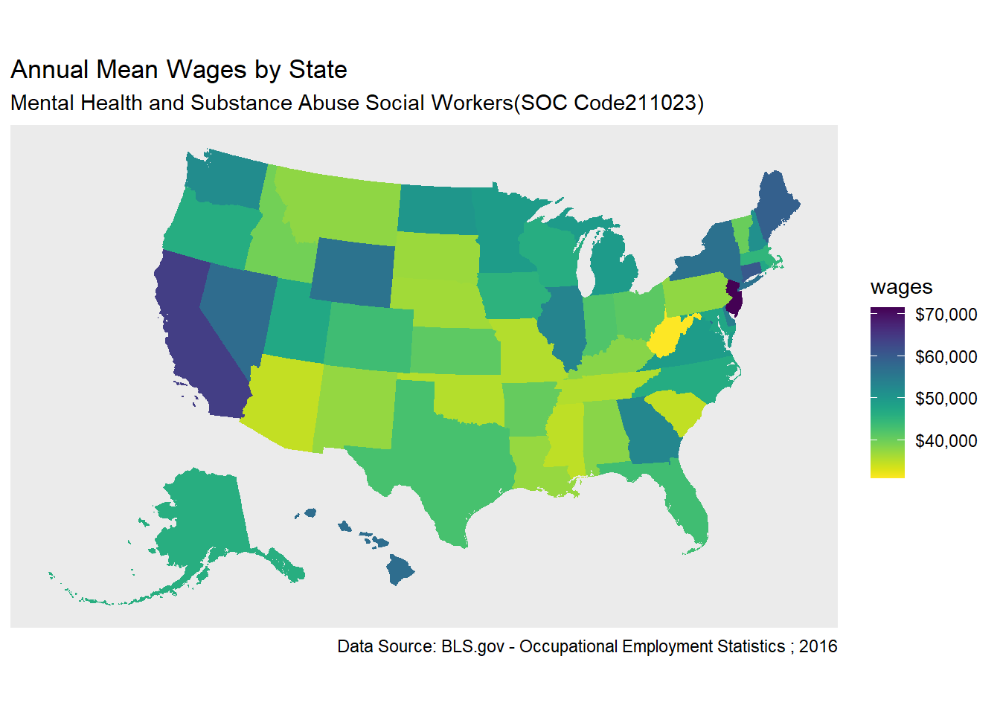

library(tidyverse)
library(readxl)
library(tigris)
library(sf)
library(viridis)Thematic Mapping with geom_sf
Shapefiles as sf
Use the tigris package to get Census Tiger shapefiles for census geographies. Coastal boundaries can be gathered with the tigris argument: cb = TRUE.
us_geo <- tigris::states(class = "sf", cb = TRUE) %>%
shift_geometry()us_geo <- tigris::states(class = "sf", cb = TRUE)) %>%
shift_geometry()Get BLS data
In additon to shapefiles, the wage data used in this example comes from from the Bureau of Labor Statistics. These data are stored in an excel file in the data directory of the repository: data/OES_Report.xlsx.
Salary4Helpers <-
read_excel("data/OES_Report.xlsx",
col_types = c("text", "numeric"),
skip = 4)
Salary4HelpersWrangle the data
Using the stringr package we can extract the text of the state names from the state code by leveraging regular expressions (i.e. regex) pattern matching techniques with stringr::str_extract().
BlsWage_ToJoin <- Salary4Helpers %>%
rename(wages = "Annual mean wage(2)") %>%
mutate(State = str_extract(`Area Name`, "\\w+.*(?=\\()")) %>%
drop_na(wages) %>%
select(State, wages)Join data
Use the dplyr::left_join function to append BLS variable to the sf tibble (data frame).
HelperShapeObject <- us_geo %>%
left_join(BlsWage_ToJoin,
by = c("NAME" = "State"))50 states
Filter to only the 50 US states + D.C.
Alaska and Hawaii were shifted and rescaled using tigris::shift_geometry(), above.
contiguous_states <- HelperShapeObject %>%
filter(GEOID < 60) ggplot2 with geom_sf and viridis
ggplot2 is one of the more popular and broadly distributed graphics packages used in the R community. (Learn more about ggplot2.
In this plot I reversed the direction of the color scale. Reversing the color pallette’s direction is not a visualization best practice, but I use this approach to demonstrate the direction argument.
Use a pleasing projection. In this case assign the CRS projection to ‘5070’
coord_sf(crs = 5070)Help with projection/CRS
coords_sf(datum = NA)Remove gridlines, i.e graticules
contiguous_states %>%
ggplot(aes(fill = wages, color = wages)) +
geom_sf() +
coord_sf(crs = 5070, datum = NA) +
scale_fill_viridis(direction = -1, label = scales::dollar) +
scale_color_viridis(direction = -1, label = scales::dollar) +
labs(title = "Annual Mean Wages by State",
subtitle = "Mental Health and Substance Abuse Social Workers(SOC Code211023)",
caption = "Data Source: BLS.gov - Occupational Employment Statistics ; 2016")
End Notes
This session inspired by https://www.computerworld.com/article/3175623/data-analytics/mapping-in-r-just-got-a-whole-lot-easier.html